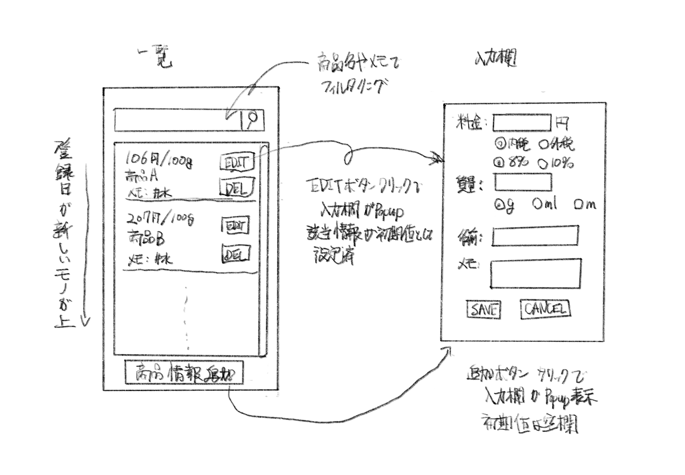

モノを買う時の判断材料として、モノの100gあたりの価格を知りたいと思いました。
React(Next.js)を勉強したので、アプリとして作成したいと思います。
スーパーとかでは値札に、100gあたりの価格が書いてあるので、商品を比較する時に便利です。 ネットで知らべた商品やチラシの商品なども100gあたりの価格をメモできると便利そうです。
すすめかた
以下の工程で作成したいと思います。
- コンセプト作成
- シナリオ作成
- アプリの名前
- UIスケッチ / 絵コンテ作成
- 部品一覧作成
- コード作成
- テスト?
- 公開
コンセプト
まずは洗い出し。アプリについて思い付くものを30個ぐらい書き出す。
- 機能
- 登録機能
- 商品の重量(g)、価格を入力すると、100gあたりの価格を表示する
- 商品の容量(ml)、価格を入力すると、100mlあたりの価格を表示する
- 商品の容量(m)、価格を入力すると、1mあたりの価格を表示する
- 編集機能
- 商品の名前、店舗などの情報も追記できる
- 入力した情報は、記録用に後から変更できるようにしたい
- 後から内税、外税、通常税率、軽減税率を変更可能に
- 商品の質量の単位(重量(g)、容量(ml))を変更可能に
- 優先度低
- 商品の簡単な評価もできるようにする?!
- 追加する情報はタグのようなものが良い?!
- 購入経験の有無も入力可能に
- いつのどういった価格かも追記可能に(xxxx/x/xのセール品など)
- 一覧表示機能
- 最近入力した情報の何件かが表示されている
- 優先度低
- 過去に入力した情報を一覧表示できる
- 過去に入力した情報を検索できる
- 管理機能
- 優先度低
- 記録データのエクスポート可能に
- 記録データのインポート可能に
- 記録データの初期化可能に
- 優先度低
- UI
- スマフォでの利用が前提
- 通常モードとダークモードを切り替え可能にしたい
- ブログに埋め込みたい
- ブログに単機能の細かいアプリのカテゴリを追加したい
- 単機能の細かいアプリをシリーズ化したい
- 登録機能
- 目的
- アプリの目的
- 計算が苦手なので商品を選びの参考にしたい
- チラシやサイトの情報から、興味ある商品の
単位当たりの価格を登録する - 店内で商品情報から
単位当たりの価格を知りたい - 事前に確認した
単位当たりの価格と店内で確認した単位当たりの価格で商品選びの参考にする - 過去に入力済みの
単位当たりの価格を検索し、商品選びの参考にする
- チラシやサイトの情報から、興味ある商品の
- 計算が苦手なので商品を選びの参考にしたい
- 経験の目的
- デザイン
- アプリの開発を通じてデザインの勉強をしたい
- デジタル庁のデザインガイドラインを学ぶ
- シナリオを作成したい
- アプリの名前を決めたい
- UIスケッチを作成したい
- 絵コンテを作成したい
- 部品一覧を作成したい
- アプリの開発を通じてデザインの勉強をしたい
- ソフト開発
- テスト方法を勉強したい
- デザイン
- アプリの目的
- 技術関連
- Next.jsで作成したい
- データの保存もブラウザで完結したい
- プログラミングで数値(金額)の計算はややこしいらしい
- その他
シナリオ作成
コンセプトからアプリの目的部分を抜粋し再構成する。
- 起承
- ○○を買いたい
- Amazonで確認してみよう
- チラシやサイトの情報から、興味ある商品の
単位当たりの価格を登録する
- チラシやサイトの情報から、興味ある商品の
- 転
- 実物も見てみたい
- 店内で商品情報から
単位当たりの価格を知りたい
- 店内で商品情報から
- 実物も見てみたい
- 結
- 購入するか判断
- 事前に確認した
単位当たりの価格と店内で確認した単位当たりの価格で商品選びの参考にする - 今回は買わない
- 事前に確認した
- 別の日
- たまたま近くの店で商品を発見
- 過去に入力済みの
単位当たりの価格を検索し、商品選びの参考にする
- 購入するか判断
アプリの名前(仮)
単位当たりの価格を求めるアプリ、つまり以下を求めるので、
価格 / 一定の質量
アプリ名前は以下にします。
“
perN (発音は"パーン")
UIスケッチ
シナリオを実現できるようなUIのスケッチをつくる。

部品一覧
デザインについては、デジ庁のデザインシステムを参考にする。 (ただし、カラーについては、Color system – Material Design 3を参考にする。1)
Storybook: Frontend workshop for UI developmentを使って、部品一覧を作成する。
kantas-spike/perNにプロジェクトを作成し、その中にstorybookを作成する。
ストーリーブック
- スタイル
- コンポーネント
-
デジ庁のデザインシステムでは予め配色が決まっているため ↩︎